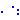

Utility components used by package Examples
This package contains some utility components used by package examples. These components are auxiliary components that should not be used like true MLS components since they are designed the purpose of the examples only, not for common use.
Extends from Modelica.Icons.UtilitiesPackage (Icon for utility packages).
| Name | Description |
|---|---|
| Nand | CMOS NAND Gate (see Tietze/Schenk, page 157) |
| NonlinearResistor | Chua's resistor |
|  RealSwitch | Ideal switch with resistance |
| Transistor | Transistor with resistance an capacitance |
| DirectCapacitor | Input/output block of a direct capacitor model |
| Input/output block of an inverse capacitor model | |
| SwitchedCapacitor | Switched capacitor which can represent a positive or negative resistance |
| Resistor | Input/output block of a resistance model |
| DirectInductor | Input/output block of a direct inductor model |
| InverseInductor | Input/output block of an inverse inductor model |
| Conductor | Input/output block of a conductance model |
CMOS NAND Gate (see Tietze/Schenk, page 157)
The nand gate is a basic CMOS building block. It consists of four CMOS transistors.
Reference:
Tietze, U.; Schenk, Ch.: Halbleiter-Schaltungstechnik. Springer-Verlag Berlin Heidelberg NewYork 1980, p. 157
| Name | Description |
|---|---|
| x1 | |
| x2 | |
| Vdd | |
| y |
Chua's resistor
This is the only nonlinear component for Chua's circuit. It is a piecewise linear resistor with both an inner and an outer range, which includes the inner one. The slopes of both ranges are given by parameters. The resistance characteristic is continuous. For Chua's circuit both slopes have to be chosen to be negative.
Extends from Interfaces.OnePort (Component with two electrical pins p and n and current i from p to n).
| Name | Description |
|---|---|
| Ga | Conductance in inner voltage range [S] |
| Gb | Conductance in outer voltage range [S] |
| Ve | Inner voltage range limit [V] |
| Name | Description |
|---|---|
| p | Positive electrical pin |
| n | Negative electrical pin |
Ideal switch with resistance
This component is a special kind of a commuting switch which possesses an additional constant resistance. This resistance was necessary in an example. It is not designed for common use.
| Name | Description |
|---|---|
| p | |
| n1 | |
| n2 | |
| control |
Transistor with resistance an capacitance
Since the simple bipolar transistor model does not have base or collector resistances both are added in this component. Additionally, a capacity is added to the base pin. See the schematic for more details. In such a way the transistor model can be enhanced to become more common.
| Name | Description |
|---|---|
| c | |
| b | |
| e |
Input/output block of a direct capacitor model
Extends from Modelica.Blocks.Icons.Block (Basic graphical layout of input/output block).
| Name | Description |
|---|---|
| C | Capacitance [F] |
| Name | Description |
|---|---|
| iDrive | [A] |
| v | Capacitor changes voltage due to current [V] |
| dv | Capacitor changes voltage due to current [V/s] |
| i | Current to the capacitor [A] |
 Modelica.Electrical.Analog.Examples.Utilities.InverseCapacitor
Modelica.Electrical.Analog.Examples.Utilities.InverseCapacitorInput/output block of an inverse capacitor model
Extends from Modelica.Blocks.Icons.Block (Basic graphical layout of input/output block).
| Name | Description |
|---|---|
| C | Capacitance [F] |
| Name | Description |
|---|---|
| v | Voltage to drive the Capacitor [V] |
| dv | Voltage to drive the Capacitor [V/s] |
| i | Current needed to drive the oneport according to v, dv [A] |
Switched capacitor which can represent a positive or negative resistance
This model is a switched capacitor model without thermal behavior which can represent positive and negative resistances.
The clock source is inside the model, its frequency can be chosen by a parameter. Also the resistance is a parameter which can be positive and negative. The internal (switched) capacitor is parametrized in such a way that the total resistance is independently from the frequency equal to the resistance parameter.
| Name | Description |
|---|---|
| clock | Clock [s] |
| R | Resistance [Ohm] |
| Name | Description |
|---|---|
| p | |
| n |
Input/output block of a resistance model
Extends from Modelica.Blocks.Icons.Block (Basic graphical layout of input/output block).
| Name | Description |
|---|---|
| R | Resistance [Ohm] |
| Name | Description |
|---|---|
| v1 | Voltage of left oneport of conduction element [V] |
| i1 | Current generated by the conduction element [A] |
| v2 | Voltage of right oneport of conduction element [V] |
| i2 | Current generated by the conduction element [A] |
Input/output block of a direct inductor model
Extends from Modelica.Blocks.Icons.Block (Basic graphical layout of input/output block).
| Name | Description |
|---|---|
| L | Inductance [H] |
| Name | Description |
|---|---|
| vDrive | [V] |
| i | Inductor changes current due to voltage [A] |
| di | Inductor changes current due to voltage [A/s] |
| v | Voltage to the inductor [V] |
Input/output block of an inverse inductor model
Extends from Modelica.Blocks.Icons.Block (Basic graphical layout of input/output block).
| Name | Description |
|---|---|
| L | Inductance [H] |
| Name | Description |
|---|---|
| i | Current to drive the Inductor [A] |
| di | Current to drive the Inductor [A/s] |
| v | Voltage needed to drive the oneport according to i, di [V] |
Input/output block of a conductance model
Extends from Modelica.Blocks.Icons.Block (Basic graphical layout of input/output block).
| Name | Description |
|---|---|
| G | Conductance [S] |
| Name | Description |
|---|---|
| i1 | Current of left oneport of resistance element [A] |
| v1 | Voltage generated by the resistance element [V] |
| i2 | Current of right oneport of conduction element [A] |
| v2 | Voltage generated by the resistance element [V] |